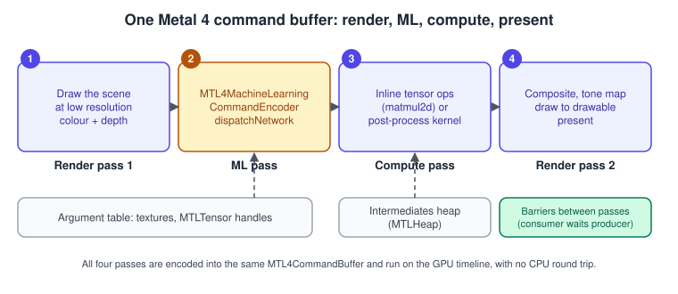
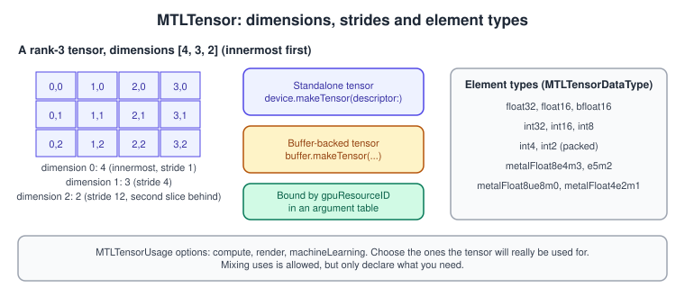
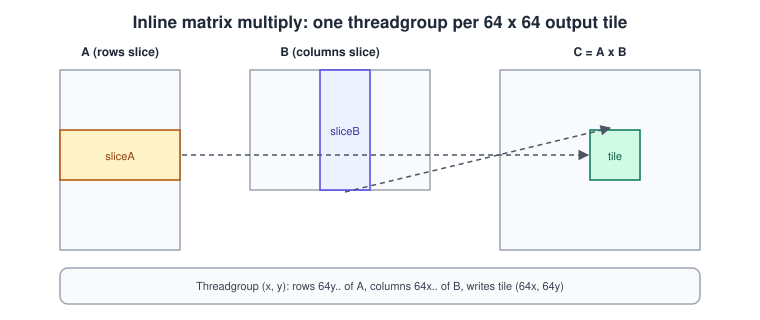

Machine Learning in Metal 4
|
This content was generated with the assistance of AI and should be verified against the official documentation before being relied on in production. |
Before Metal 4, putting a neural network into a frame meant leaving the GPU timeline: Core ML or MPS Graph ran the model, you waited for its output (or paid for a synchronisation) and then went back to rendering. Metal 4 changes that. A network becomes one more kind of pass inside the same command buffer as your draws and dispatches, working on a new resource type, the tensor. For games this is what makes learned upscalers, denoisers, material compressors and small gameplay networks practical, because the result of inference is available to the next pass on the GPU with no CPU round trip.
The general concepts behind this page are in GPU Architecture Basics.
The facts on this page were checked in November 2026. It documents Metal 4 (the MTL4* types and MTLTensor are available from iOS,
iPadOS, macOS, tvOS and visionOS 26.0) and Metal Shading Language 4, whose tensor and TensorOps support is used by the inline kernel
example; MSL 4.1 and Xcode 27 are the current toolchain on the 27 OSes. Metal 4 needs an A14 or later (iPhone, iPad, Apple TV), an Apple
silicon Mac or Apple Vision Pro. The hardware neural accelerators mentioned below exist on newer GPU families only, and the
page says where a feature depends on one.
In the running example (the Bookshelf app, a multiplatform SwiftUI app hosting an MTKView with a Metal 4 path and a Metal 3 fallback,
plus a visionOS target) this page sits after the ray-traced reflections: a small learned denoiser for the reflection buffer is the
sort of network you would add here. The Bookshelf renders fine without it, so everything on this page is an optional Metal 4 path.
The Metal 4 frame structure comes from Hello Triangle with Metal 4, the
barriers from Synchronization and Barriers, and the upscaler and
denoiser that Apple ships ready-made are in
MetalFX Upscaling and Frame Interpolation.
Where machine learning fits in a frame

Metal 4 offers two ways to run tensor work, and the choice between them is the main design decision on this page:
| Approach | What it is | Use it for |
|---|---|---|
Machine-learning pass |
A whole pre-trained network, packaged as a Metal package, compiled into an |
Models of any size you did not write by hand: upscalers, denoisers, style networks, small classifiers. The compiler schedules the whole network. |
Inline TensorOps |
Tensor types and operations such as |
A few layers fused with your own code: one matrix multiply in a deferred lighting pass, a tiny MLP evaluated per pixel or per vertex, a learned BRDF lookup. |
Both read and write MTLTensor objects. Both are encoded into a Metal 4 command buffer with the same allocator, argument table and
residency rules as any other pass. Neither replaces Core ML for application features that run off the GPU timeline (see
the comparison table near the end of this page).
MTLTensor
An MTLTensor is a multi-dimensional array resource, documented by Apple as a resource representing a multi-dimensional array for
machine-learning workloads. Like a texture it has a descriptor, a storage mode and a GPU identity (gpuResourceID) that you put in an
argument table.

The descriptor
MTLTensorDescriptor configures a new tensor. Its documented properties are:
| Property | Meaning |
|---|---|
|
An |
|
An |
|
An |
|
An |
|
The same resource controls as buffers and textures. |
|
Extra planes that carry side data. Quantised and block-scaled formats use them for the scale factors (see below). |
MTLTensorExtents is a small integer array with a rank and an extents property. It is used for dimensions, strides, slice origins
and block factors alike.
Creating tensors
import Metal
func makeTensor(device: MTLDevice,
dimensions: [Int],
type: MTLTensorDataType,
usage: MTLTensorUsage,
storage: MTLStorageMode = .shared) throws -> MTLTensor {
let descriptor = MTLTensorDescriptor()
descriptor.dimensions = MTLTensorExtents(dimensions)!
descriptor.dataType = type
descriptor.usage = usage
descriptor.storageMode = storage
return try device.makeTensor(descriptor: descriptor)
}
// A 64 x 64 half-precision matrix usable by a network and by a compute kernel.
let matrix = try makeTensor(device: device,
dimensions: [64, 64],
type: .float16,
usage: [.machineLearning, .compute])A tensor can also share storage with a buffer: MTLBuffer.makeTensor(descriptor:offset:) creates a single-plane tensor over the
buffer’s memory, and a tensor exposes the buffer it was made from through its buffer and bufferOffset properties. This is how you
let a compute kernel write plain floats into a buffer and have a network read the same bytes as a tensor without a copy. The
layout is then your responsibility: set strides to match what the kernel wrote.
Reading and writing from the CPU
For tensors in shared storage, replace(sliceOrigin:sliceDimensions:withBytes:strides:) copies bytes in and
getBytes(_:strides:sliceOrigin:sliceDimensions:) copies a slice out. Both take a slice (an origin and a size in each dimension) and
the strides of your memory, so they also convert layouts. Both variants have a plane: form for tensors with auxiliary planes. For
private tensors, copy on the GPU: MTL4ComputeCommandEncoder.copy(sourceTensor:sourceOrigin:sourceDimensions:destinationTensor:destinationOrigin:destinationDimensions:)
moves a region between tensors inside a pass.
Element types and quantised tensors
MTLTensorDataType lists the element types a tensor can have:
| Group | Cases |
|---|---|
Floating point |
|
Integer |
|
Low-precision floating point |
|
The narrow integer and floating-point cases are what Apple’s WWDC26 material calls quantised tensor formats. The idea is the usual
one: weights are stored with 8, 4 or even 2 bits instead of 16, so the model is two to eight times smaller and memory traffic drops by
the same factor, at the price of some accuracy and of carrying scale factors. Block-scaled formats keep one scale per small block of
values, and that is what the auxiliaryPlanes of the descriptor and of MTLTensorBinding are for. Three practical points:
-
Quantise offline. You convert and quantise a model with the Core ML and Metal tools before it ships; the runtime consumes the result. A network that was trained in 16-bit floats is not made smaller by changing the tensor type at run time.
-
Activations stay wider than weights. Keep intermediate activations in
float16orbfloat16even when the weights areint4, unless the model was trained for quantised activations. -
Check the GPU family. Narrow formats run fastest where the hardware has a native path. WWDC26 added neural accelerators on the newest Apple silicon (M5 Pro and Max), and Apple’s inline-tensor sample states that GPUs in the
apple10family and later have a neural accelerator in every core that runs tensor operations in hardware. On older chips the same code still runs, through the general shader cores. Testdevice.supportsFamily(.apple10)if you want to choose a model variant, and read the Metal Feature Set Tables for the per-chip details.
The machine-learning pass
From a trained model to a pipeline state
You do not write a network in Metal. You convert one: Apple’s tools turn a model from a framework such as PyTorch or an existing Core
ML model into a Metal package, a file that contains the network and an entry-point function named main. At run time the steps are:
-
Load the package as an
MTLLibrary(the sample usesmakeLibrary(URL:)). -
Create an
MTL4Compilerwithdevice.makeCompiler(descriptor:). -
Describe the entry function with an
MTL4LibraryFunctionDescriptor(libraryandname). -
Put it in an
MTL4MachineLearningPipelineDescriptorasmachineLearningFunctionDescriptor. -
If the model has inputs of dynamic shape, fix their sizes with
setInputDimensions(_:bufferIndex:). -
Compile with
compiler.makeMachineLearningPipelineState(descriptor:).
The result is an MTL4MachineLearningPipelineState. It exposes intermediatesHeapSize (the memory the network needs for its
temporary results, in bytes), reflection (an MTL4MachineLearningPipelineReflection whose bindings describe the inputs and
outputs as MTLTensorBinding values with dimensions, indexType, tensorDataType and auxiliaryPlanes) and device. Compilation
is the expensive step, so do it once at load time on a background task, and consider caching it (see
Shader Compilation and Pipeline Caching).
Binding and dispatching
import Metal
/// Runs one inference of a Metal-package network on the GPU timeline.
final class InferencePass {
let device: MTLDevice
let queue: MTL4CommandQueue
let allocator: MTL4CommandAllocator
let commandBuffer: MTL4CommandBuffer
let pipeline: MTL4MachineLearningPipelineState
let table: MTL4ArgumentTable
let intermediates: MTLHeap
let residency: MTLResidencySet
let done: MTLSharedEvent
var doneValue: UInt64 = 0
let input: MTLTensor
let output: MTLTensor
init(device: MTLDevice, packageURL: URL,
inputShape: [Int], outputShape: [Int]) throws {
self.device = device
guard let queue = device.makeMTL4CommandQueue(),
let allocator = device.makeCommandAllocator(),
let commandBuffer = device.makeCommandBuffer(),
let done = device.makeSharedEvent()
else { throw NSError(domain: "InferencePass", code: 1) }
self.queue = queue
self.allocator = allocator
self.commandBuffer = commandBuffer
self.done = done
// 1. Compile the network into a pipeline state.
let library = try device.makeLibrary(URL: packageURL)
let compiler = try device.makeCompiler(descriptor: MTL4CompilerDescriptor())
let function = MTL4LibraryFunctionDescriptor()
function.library = library
function.name = "main"
let descriptor = MTL4MachineLearningPipelineDescriptor()
descriptor.machineLearningFunctionDescriptor = function
descriptor.setInputDimensions(MTLTensorExtents(inputShape)!, bufferIndex: 0)
pipeline = try compiler.makeMachineLearningPipelineState(descriptor: descriptor)
// 2. Tensors for the input and the output.
input = try makeTensor(device: device, dimensions: inputShape,
type: .float16, usage: .machineLearning)
output = try makeTensor(device: device, dimensions: outputShape,
type: .float16, usage: .machineLearning)
// 3. Argument table: the order must match the network's bindings.
let tableDescriptor = MTL4ArgumentTableDescriptor()
tableDescriptor.maxBufferBindCount = 2
table = try device.makeArgumentTable(descriptor: tableDescriptor)
table.setResource(input.gpuResourceID, bufferIndex: 0)
table.setResource(output.gpuResourceID, bufferIndex: 1)
// 4. Heap for the network's temporary tensors.
let heapDescriptor = MTLHeapDescriptor()
heapDescriptor.size = pipeline.intermediatesHeapSize
heapDescriptor.storageMode = .private
guard let heap = device.makeHeap(descriptor: heapDescriptor)
else { throw NSError(domain: "InferencePass", code: 2) }
intermediates = heap
// 5. Everything the pass touches must be resident.
residency = try device.makeResidencySet(descriptor: MTLResidencySetDescriptor())
residency.addAllocations([input, output, heap])
residency.commit()
queue.addResidencySet(residency)
}
/// Encodes and submits one inference and returns the event value that signals completion.
@discardableResult
func run() -> UInt64 {
allocator.reset()
commandBuffer.beginCommandBuffer(allocator: allocator)
commandBuffer.useResidencySet(residency)
if let encoder = commandBuffer.makeMachineLearningCommandEncoder() {
encoder.setPipelineState(pipeline)
encoder.setArgumentTable(table)
encoder.dispatchNetwork(intermediatesHeap: intermediates)
encoder.endEncoding()
}
commandBuffer.endCommandBuffer()
queue.commit([commandBuffer])
doneValue += 1
queue.signalEvent(done, value: doneValue)
return doneValue
}
}What the example shows, and the rules behind each step:
-
The argument table is the only way in. The pass reads its tensors from
MTL4ArgumentTableslots, bound withsetResource(_:bufferIndex:)and a tensor’sgpuResourceID. The slot order must match the network’s bindings; readpipeline.reflection?.bindings(each binding carries a name and an index) rather than guessing, especially when a model has several inputs. -
Dynamic shapes must be fixed. A network exported with a dynamic input size cannot be compiled until you give each such input a size with
setInputDimensions. A different size needs a different pipeline state. -
The intermediates heap is yours. The network needs scratch memory of
intermediatesHeapSizebytes. Allocate one heap per pipeline, reuse it every frame, and do not run two dispatches that share a heap at the same time. Keep itprivate. -
Residency is explicit in Metal 4. Add the tensors and the heap to a residency set, commit the set and attach it to the queue or the command buffer. A missing allocation is the usual cause of a GPU fault or of a Shader Validation error saying "resource not resident" (see Debugging and Profiling).
-
Reuse everything but the commands. The allocator is reset and the command buffer re-begun each frame; the pipeline, tensors, table and heap are created once. In a real renderer you keep one allocator per frame in flight, as described in MetalKit, MTKView and SwiftUI.
Ordering the ML pass against other work
The ML pass is a command-encoder pass like any other, so ordering is expressed with the Metal 4 barriers. MTLStages has a
machineLearning case ("all machine learning network dispatch operations") next to dispatch, vertex and fragment. To make a
compute pass wait for the network that produced its input, put a barrier after the ML encoder:
// After encoding the ML pass with `mlEncoder`:
mlEncoder.barrier(afterEncoderStages: .machineLearning,
beforeEncoderStages: .dispatch,
visibilityOptions: .device)
mlEncoder.endEncoding()
// The next encoder (a compute pass whose kernel reads `output`) may now start its dispatch stage.Source: MTL4CommandEncoder
Using the wrong stage pair is a silent bug: the consumer reads stale data on some GPUs and correct data on others. If you are unsure, over-synchronise first and tighten later with the dependency viewer in the Metal debugger.
Inline TensorOps in Metal Shading Language
For small, fused work you skip the pipeline and call the tensor operations from a kernel. MSL 4 adds a tensor type and, with the
Metal Performance Primitives library, operations such as matmul2d that spread a matrix multiply over a threadgroup’s SIMD groups
and, where present, the neural accelerators.

The kernel below multiplies two half-precision matrices with a ReLU fused into the same dispatch. It follows Apple’s inline-tensor sample.
#include <metal_stdlib>
#include <metal_tensor>
#include <MetalPerformancePrimitives/MetalPerformancePrimitives.h>
using namespace metal;
using namespace mpp::tensor_ops;
half relu(half value) {
return max(value, (half)0.0f);
}
kernel void matrix_multiplication_kernel(
uint2 threadgroupIdentifier [[threadgroup_position_in_grid]],
tensor<device half, dextents<int, 2>> sourceA,
tensor<device half, dextents<int, 2>> sourceB,
tensor<device half, dextents<int, 2>> destination)
{
const int TileSize = 64;
int tileOriginX = TileSize * threadgroupIdentifier.x;
int tileOriginY = TileSize * threadgroupIdentifier.y;
// Slices: all of A's inner dimension for this tile's rows, all of B's for this tile's columns.
auto sliceA = sourceA.slice<dynamic_extent, TileSize>(0, tileOriginY);
auto sliceB = sourceB.slice<TileSize, dynamic_extent>(tileOriginX, 0);
auto destinationSlice = destination.slice<TileSize, TileSize>(tileOriginX, tileOriginY);
// 64 x 64 output tile, inner dimension taken from the tensors at run time.
constexpr auto descriptor = matmul2d_descriptor(TileSize, TileSize, dynamic_length_v<int>);
matmul2d<descriptor, execution_simdgroups<4>> operation;
// The result stays in registers as a cooperative tensor.
auto cooperativeTensor =
operation.get_destination_cooperative_tensor<decltype(sliceA), decltype(sliceB), half>();
operation.run(sliceA, sliceB, cooperativeTensor);
// Fused epilogue: each thread owns some of the elements.
auto threadElements = cooperativeTensor.get_capacity();
for (int element = 0; element < threadElements; element++) {
auto value = cooperativeTensor[element];
cooperativeTensor[element] = relu(value);
}
cooperativeTensor.store(destinationSlice);
}The ideas to take from it:
-
Tensors are kernel parameters. A
tensor<device half, dextents<int, 2>>is a rank-2 tensor in device memory with dynamic extents; the kernel reads the sizes from the tensor at run time. TensorOps require an index type ofint. -
Slicing creates the work split.
slice<static extents>(origin...)gives a view. Static extents (hereTileSize) let the compiler skip edge handling;dynamic_extentfor the shared inner dimension lets the same kernel serve any size. -
The descriptor and the execution scope are template parameters.
matmul2d_descriptor(64, 64, dynamic_length_v<int>)sets the tile andexecution_simdgroups<4>says four SIMD groups of the threadgroup cooperate, so launch threadgroups of 4 SIMD groups. -
Cooperative tensors keep intermediates in registers. Fusing the activation here saves a round trip through device memory.
-
Apple silicon needs no software pipelining. The sample notes that the GPU overlaps memory and compute without an explicit schedule, so the kernel stays short.
The host side creates sourceA, sourceB and destination as float16 tensors with compute usage, builds an
MTL4ComputePipelineDescriptor whose computeFunctionDescriptor names the kernel, compiles it with
MTL4Compiler.makeComputePipelineState(descriptor:dynamicLinkingDescriptor:compilerTaskOptions:), binds the three tensors with
setResource(_:bufferIndex:), and dispatches with dispatchThreadgroups(threadgroupsPerGrid:threadsPerThreadgroup:), where the grid
is the output size divided by the tile size, rounded up, and the threadgroup is 4 SIMD groups wide (128 threads on a 32-wide GPU).
import Metal
func encodeMatrixMultiply(commandBuffer: MTL4CommandBuffer,
pipeline: MTLComputePipelineState,
table: MTL4ArgumentTable,
outputRows: Int, outputColumns: Int) {
guard let encoder = commandBuffer.makeComputeCommandEncoder() else { return }
encoder.setComputePipelineState(pipeline)
encoder.setArgumentTable(table)
let tile = 64
let grid = MTLSize(width: (outputColumns + tile - 1) / tile,
height: (outputRows + tile - 1) / tile,
depth: 1)
// Four SIMD groups: execution_simdgroups<4> in the kernel.
let width = pipeline.threadExecutionWidth * 4
encoder.dispatchThreadgroups(threadgroupsPerGrid: grid,
threadsPerThreadgroup: MTLSize(width: width, height: 1, depth: 1))
encoder.endEncoding()
}Source: MTL4ComputeCommandEncoder
Shader Validation checks tensor usage: it reports accesses with a wrong index or rank, misaligned strides and out-of-bounds slices, so turn it on while you bring up a kernel.
Core ML, MLX, MPS Graph or Metal 4?
| Option | Choose it when | Notes |
|---|---|---|
Metal 4 ML pass |
The result is consumed by a later GPU pass in the same frame (denoise, upscale, learned shading). |
Needs a Metal package and Metal 4 hardware; no CPU round trip. |
Inline TensorOps |
You need a few layers or one matrix multiply fused into your own shader. |
Hand-written; best for small, fixed-shape work. |
Core ML |
The model serves an app feature (vision, language, sound) and may run on the CPU, GPU or Neural Engine. |
The app-level API, scheduled by the system. See Apple Intelligence and Machine Learning. |
MLX |
You train or run models from Python or Swift on Apple silicon with array code. |
A framework above Metal, not a render-pipeline feature; see Hugging Face on Apple Platforms for model formats and conversion. |
MPS Graph |
You want a graph of operations compiled for the GPU without writing kernels, and you accept a framework-level API. |
The successor to the older MPS neural-network classes; see Image Processing and MPS. |
Compute workloads outside graphics also run on Metal; local language-model runners are the most visible example (see llama.cpp).
Where the books are outdated
| Book | What it says | Now |
|---|---|---|
CLA ch. 19 and 20 (Metal Programming Guide, Metal 2, Swift 4) |
Neural networks are built with |
Use Core ML, MPS Graph, or the Metal 4 ML encoder and |
CLA (whole book) |
|
|
MBT (Metal by Tutorials, 4th edition) |
Covers compute and post-processing with MPS but has no tensor or ML pass material. |
Metal 4 adds |
Common mistakes and performance notes
-
Wrong dimension order. Dimensions are innermost first, the reverse of how most array libraries print shapes. A transposed shape compiles and then gives garbage.
-
Forgetting residency. Tensors, the intermediates heap and any weights buffer all need to be in a residency set.
-
Rebuilding the pipeline per frame. Compilation takes far longer than a frame. Compile once, ideally off the render thread.
-
Using
sharedtensors for intermediates. Keep GPU-only dataprivate; only inputs you fill from the CPU needshared. -
Over-quantising. Measure quality on your own content; a denoiser reacts to
int4weights differently from a classifier. -
Missing barriers. Add the ML stage to the barrier when a later pass consumes the output.
-
Measuring only total frame time. Use the Metal debugger’s counters and the Performance HUD to see what the network costs per frame (see Debugging and Profiling), and size the model to the budget.
References
-
Machine learning passes: https://developer.apple.com/documentation/metal/machine-learning-passes
-
MTLTensor: https://developer.apple.com/documentation/metal/mtltensor
-
MTLTensorDescriptor: https://developer.apple.com/documentation/metal/mtltensordescriptor
-
MTLTensorDataType: https://developer.apple.com/documentation/metal/mtltensordatatype
-
MTL4MachineLearningCommandEncoder: https://developer.apple.com/documentation/metal/mtl4machinelearningcommandencoder
-
MTL4MachineLearningPipelineState: https://developer.apple.com/documentation/metal/mtl4machinelearningpipelinestate
-
MTL4MachineLearningPipelineDescriptor: https://developer.apple.com/documentation/metal/mtl4machinelearningpipelinedescriptor
-
Running a machine learning model on the GPU timeline: https://developer.apple.com/documentation/metal/running-a-machine-learning-model-on-the-gpu-timeline
-
Running inline ML operations in a shader with Metal 4: https://developer.apple.com/documentation/metal/running-inline-ml-operations-in-a-shader-with-metal-4
-
Metal Shading Language specification: https://developer.apple.com/metal/Metal-Shading-Language-Specification.pdf
-
Metal Feature Set Tables: https://developer.apple.com/metal/Metal-Feature-Set-Tables.pdf
-
What’s new in Metal: https://developer.apple.com/metal/whats-new/
-
Metal by Tutorials (publisher page): https://www.kodeco.com/books/metal-by-tutorials
-
Metal Programming Guide (publisher page): https://www.informit.com/store/metal-programming-guide-tutorial-and-reference-via-9780134668949